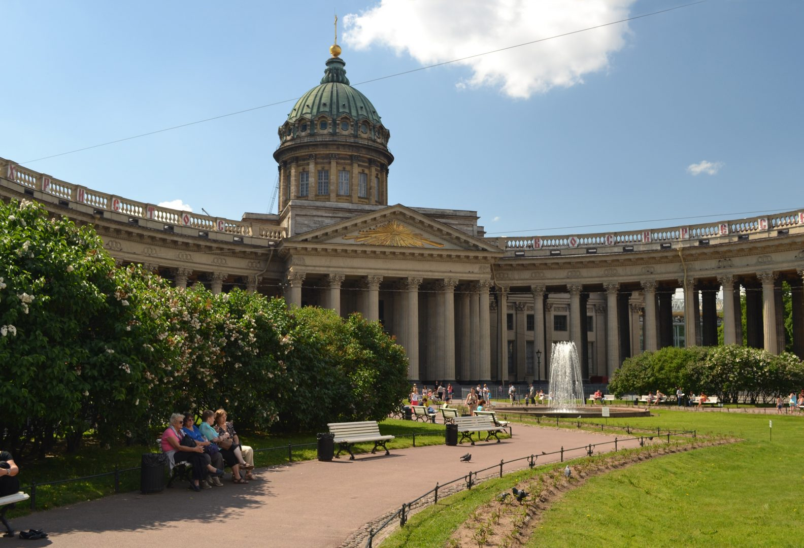
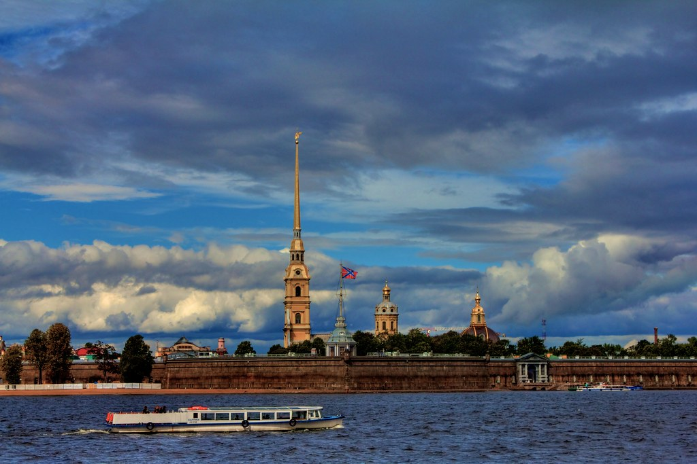
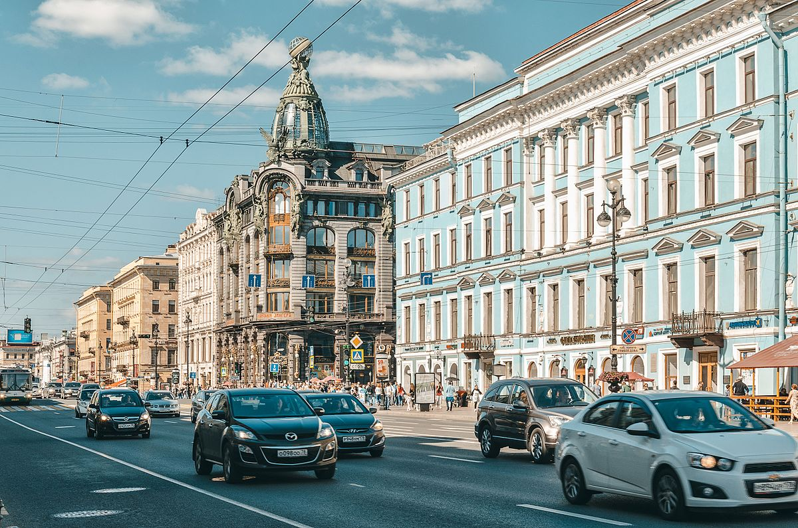
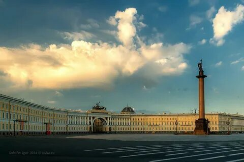

Северная столица России
Санкт-Петербург – один из красивейших мегаполисов мира, посмотреть на который приезжают путешественники из разных уголков планеты.
Только в 2015 году здесь побывало свыше 3,7 млн российских и 2,8 млн иностранных туристов.
Раскинувшийся на побережье Финского залива, в устье реки Невы, Санкт-Петербург является вторым по величине городом России (в статусе самостоятельного субъекта федерации)
и одновременно административным центром Ленинградской области и Северо-Западного федерального округа.
Кратко про город
- Кем основан: императором Петром I
- Когда построен: 16 мая 1703
- Население: 5 601 911 человек
- Площадь города: 1439 км²
- Где расположен: на побережье Финского залива и в устье реки Нева Интересные факты
- Санкт-Петербург строился прямо на болоте
- Александрийский столб не имеет фундамента
- Пётр I планировал Васильевский остров, как Венецию
- В историческом районе города запрещено строить здания выне Петропаловской крепости
- В городе больше 300 мостов
Достопримечательности

Зимний дворец (Эрмитаж)
Казанский собор
Петропаловская крепость

Медный всадник
Невский проспект

Исаакиевский собор
Дворцовая площадь

Развод мостов